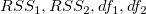
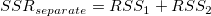
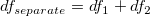
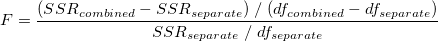
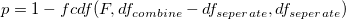

「fitcmpdata」Xファンクション (メニューから「解析：フィッティング：データセットの比較」を選択) は、同じフィット関数を使って2つのデータセットをフィットして、比較します。このXファンクションは、F検定を使って、2つのデータセットがそれぞれ十分に異なるものかどうかを判定します。
フィット比較ツールは、データセットから直接結果を計算できません。これは、フィット結果のワークシートを入力とします。つまり、2つのデータセットを比較するには、最初に2つのデータセットを1つのモデルでフィットし、フィットレポートワークシートをXファンクションの入力として選択します。次のアルゴリズムに従って、いくつかのフィット結果が2つのデータセットを比較するのに使われます。
2つのフィット結果の残差平方和と自由度を

とすると、次のようになります。

この2つのデータセットは(お互いに付け加えながら)組み合わせることができ、その統合したデータセットに同じ関数でフットを行って、残差の二乗和と自由度を求めます。そして、次式でF値を計算できます。

F値を計算すれば、Originは次式によって、p値を計算できます。

そして、このp値は、データ(パラメータではなく)が異なっているかどうかに関して、統計的な説明を行うのに使うことができます。p値が0.05より大きい場合、データセットが95%の有意水準で有意差が無いと言うことができます。
フィット比較モデルは、RSS, SSE, df, Nの値が必要です。再計算モードが「自動」または「手動」でフィットを実行するとき、これらの結果が出力するようにしてください。